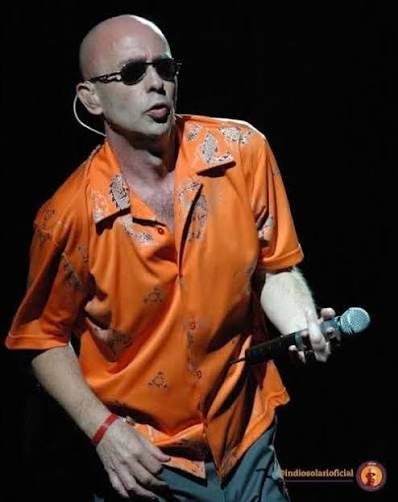

Carlos Alberto Solari
Más conocido como el Indio Solari, Carlos Alberto Solari es una de las figuras más reconocidas del rock argentino. Su trayectoria musical dejó una marca profunda en varias generaciones y dio lugar a un fenómeno que trascendió los escenarios.
A través de sus canciones, construyó un universo propio, caracterizado por letras cargadas de metáforas, imágenes y referencias que invitan a distintas interpretaciones. Su música se convirtió en parte de la vida de miles de personas.

Un recorrido por su música
Su historia está estrechamente ligada a Patricio Rey y sus Redonditos de Ricota, banda que integró junto a Skay Beilinson y que se convirtió en uno de los proyectos más influyentes del rock nacional. Con una propuesta independiente y una identidad artística particular, los Redondos construyeron una relación muy fuerte con su público.
Luego de la separación de la banda, en 2001, Solari comenzó una nueva etapa musical junto a Los Fundamentalistas del Aire Acondicionado. Este proyecto le permitió continuar desarrollando su obra y presentarse ante nuevas generaciones de seguidores.
La cultura ricotera
Alrededor de su música se formó una comunidad que encontró en las canciones, los recitales y sus símbolos una forma de identificación colectiva. Ser parte de ese público implica mucho más que escuchar una banda: también significa compartir experiencias, recuerdos y códigos propios.
Los recitales se convirtieron en encuentros multitudinarios y en acontecimientos que forman parte de la historia del rock argentino. Esa conexión entre el artista y su público es una de las características que hacen que el fenómeno ricotero siga vigente.
Explorá su universo
Conocé más sobre su historia, su música y el impacto que dejó en la cultura argentina.
Línea de tiempo Álbumes Archivo visual Leer el ensayo